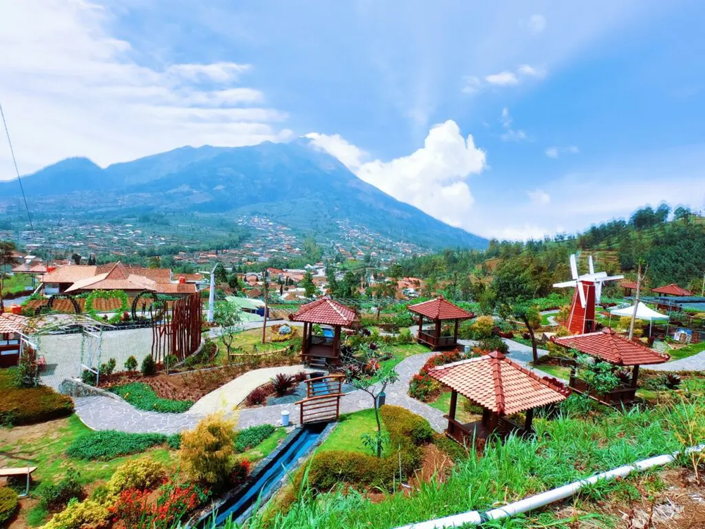
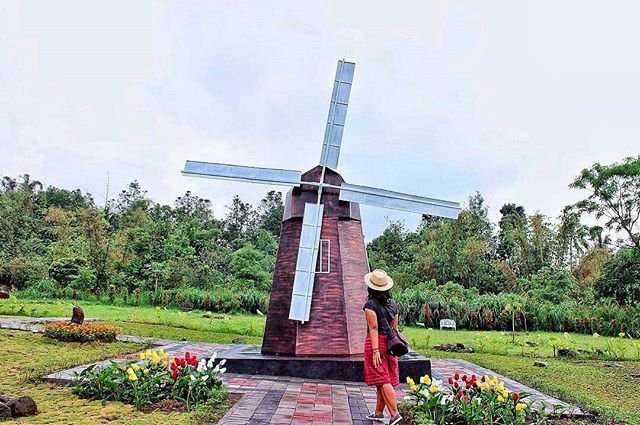

Yogyakarta punya banyak sekali destinasi wisata yang seru. Salah satu yang cocok untuk liburan keluarga adalah Merapi Park.
Tempat wisata ini berlokasi di Kabupaten Sleman, Yogyakarta. Banyak pengunjung datang untuk sekadar santai dan berburu foto.
Apa saja keseruan yang bisa dilakukan di Merapi Park? Yuk, intip Moms!
Daya Tarik Wisata di Merapi Park
Merapi Park adalah taman yang didesain indah dan punya banyak spot foto instagrammable.
Tempat ini dijuluki “The World Landmarks”, karena ada beberapa miniatur landmark dari kota-kota besar di dunia.
Area tempat wisata ini cukup luas, sehingga Moms bisa datang bersama keluarga dan anak-anak.
Namun, tak hanya untuk piknik, beberapa wahana dan keseruan lain yang bisa dijajal di sini adalah:
1. The World Landmarks
Ini adalah daya tarik utama dari Merapi Park, yang banyak diincar wisatawan yang berkunjung.
The World Landmarks adalah area di mana Moms bisa menemukan miniatur beberapa ikon terkenal di dunia.
Kebanyakan pengunjung yang datang suka mengabadikan momen dengan berfoto di miniatur-miniatur tersebut.
Jadi, jika Moms hobi berfoto, jangan lupa siapkan kamera, baterai cadangan, dan power bank yang penuh, ya.
Keseruan berfoto di sini juga akan bertambah karena banyak burung dara yang berkeliaran.
Kalau mau, Moms juga bisa memberi makan burung-burung dara yang ada di sini. Dijamin mereka akan datang menghampiri lebih dekat lagi.
2. Kids Waterpark
Seperti namanya, wahana di Merapi Park ini hanya dikhususkan untuk anak-anak saja.
Di sini, Si Kecil bisa puas bermain air di kolam renang yang disediakan.
3. Cowboy Town
Tak hanya di film, Moms juga bisa merasakan jadi cowboy di Merapi Park, lho.
Di sini, ada wahana bernama Cowboy Town, di mana Moms bisa jalan-jalan menikmati pemandangan yang ada di Merapi Park sambil menunggang kuda.
Moms juga bisa memakai aksesoris ala cowboy yang sudah tersedia, dan mengabadikan momen dengan berfoto.
4. Cats House & Rabbit Town
Wahana lain yang tak kalah menarik di Merapi Park adalah Cats House & Rabbit Town.
Seperti namanya, di sini Moms bisa berjumpa dan bermain bersama kucing dan kelinci yang lucu-lucu.
Lokasi dan Rute Menuju Merapi Park
Destinasi wisata Merapi Park beralamat di Jl. Kaliurang Km.22, 5, Banteng, Hargobinangun, Kecamatan Pakem, Kabupaten Sleman, Yogyakarta.
Ada banyak rute yang bisa dipilih untuk menuju ke sini, tergantung dari mana Moms datang.
Jarak Merapi Park dari pusat kota Yogyakarta adalah sekitar 22,6 km, dengan estimasi waktu perjalanan sekitar 1 jam.
Jika dari pusat kota Yogyakarta, Moms bisa menuju ke arah utara melewati Jl. Abu Bakar Ali.
Setelah itu, ambillah jalan menuju Jl. Cik Di Tiro hingga akhirnya sampai di Bundaran UGM.
Dari bundaran tersebut, ambil arah barat dan terus melaju hingga sampai di perempatan jalan melajulah ke arah utara.
Saat tiba di perempatan ringroad utara, teruslah lurus hingga melewati Jl. Kaliurang.
Ketika sudah tiba di pertigaan jalan menuju ke arah barat, lanjutkan dengan mengarahkan kendaraan menuju Merapi Park.
Agar lebih mudah, Moms juga bisa menggunakan aplikasi Google Maps untuk menunjukkan arah.